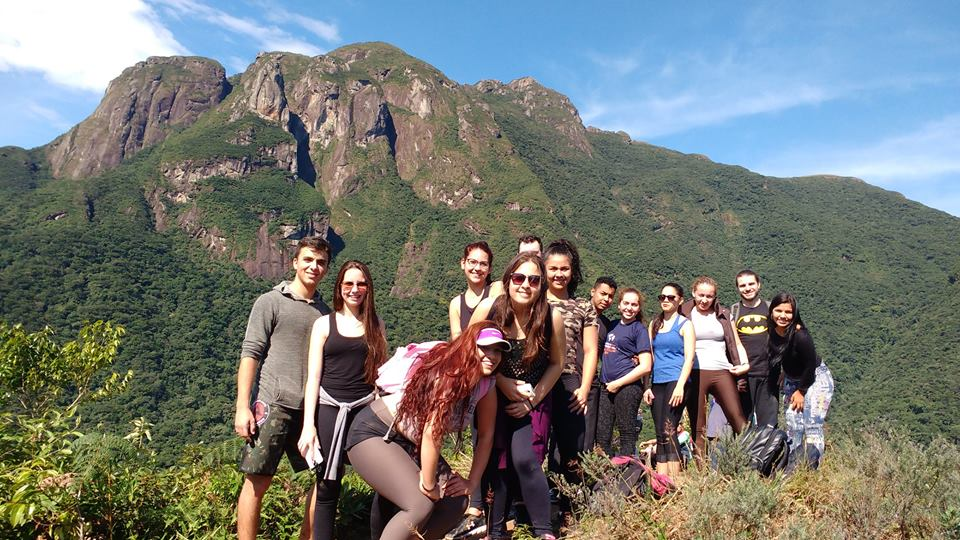
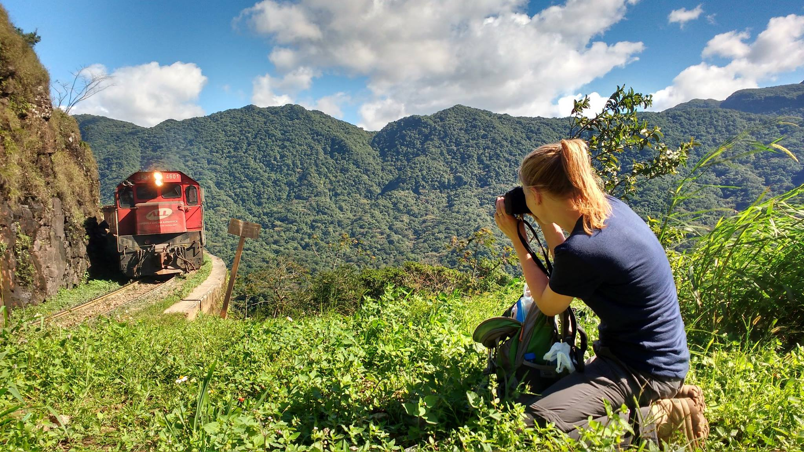
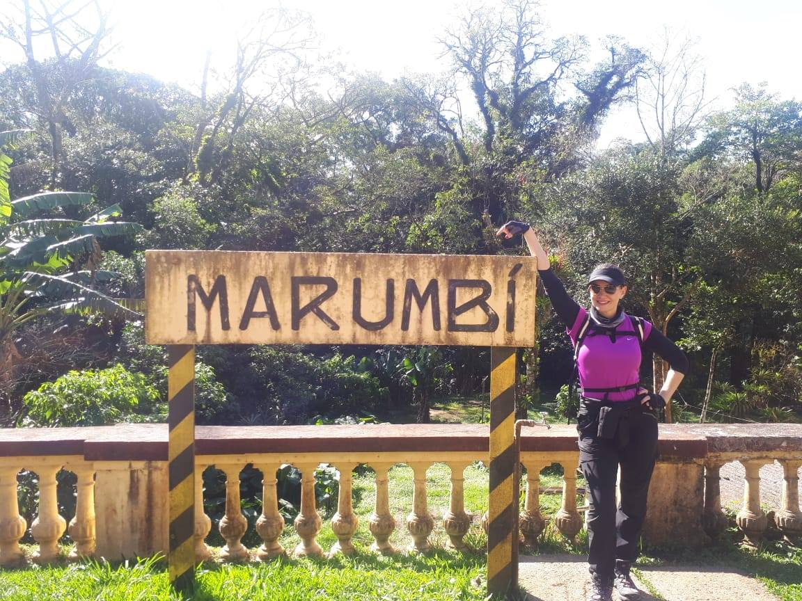
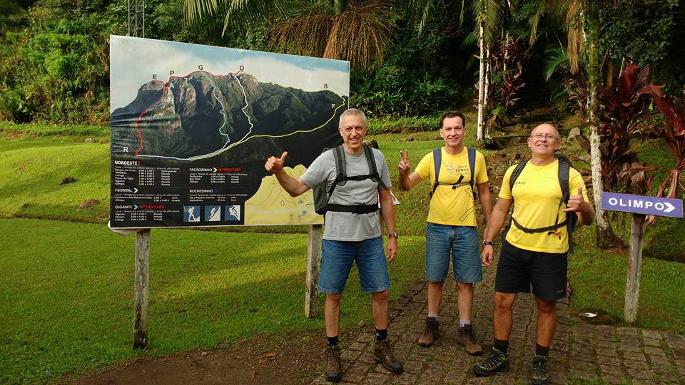
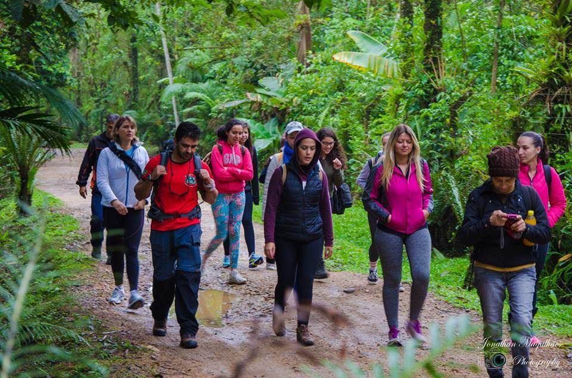

Detalhes do Roteiro
Localizado em pleno coração da Serra do Mar paranaense, o Parque Estadual do Marumbi resguarda muitas riquezas da Mata Atlântica brasileira. No Parque temos o Pico Rochedinho, sendo o menor pico do Conjunto Marumbi, com 625 metros de altitude, oferece uma trilha de dificuldade moderada, ideal para iniciantes que buscam uma experiência em meio à natureza exuberante da Serra do Mar.
A trilha do trajeto, passa por áreas sombreadas da floresta atlântica, proporcionando uma caminhada agradável e tranquila. No cume, a vista panorâmica inclui a Estação Marumbi, a Serra do Mar e o litoral do Paraná, além da histórica ferrovia Curitiba-Paranaguá serpenteando a encosta da montanha.
Serviços incluídos:
Translado 4x4 in/out, saindo do centro de Morretes;
Tarifas
| N° de pessoas | Guia bilíngue | Adulto | Criança |
|---|---|---|---|
| 2 a 4 | Sim | R$ 380.00 | R$ 350.00 |
| 5 a 15 | Sim | R$ 180.00 | R$ 150.00 |
Galeria de Fotos




